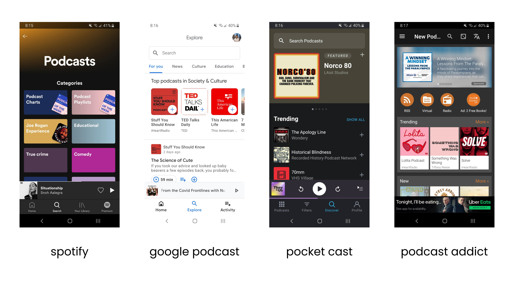
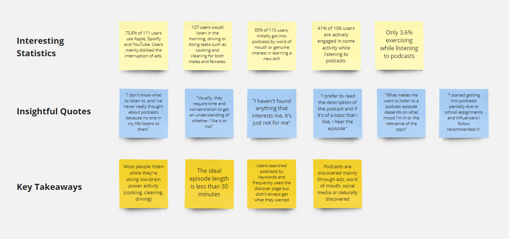
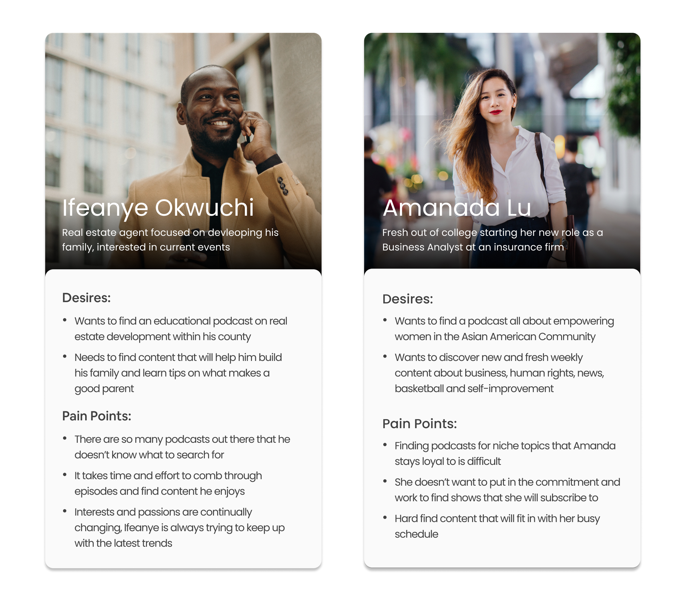
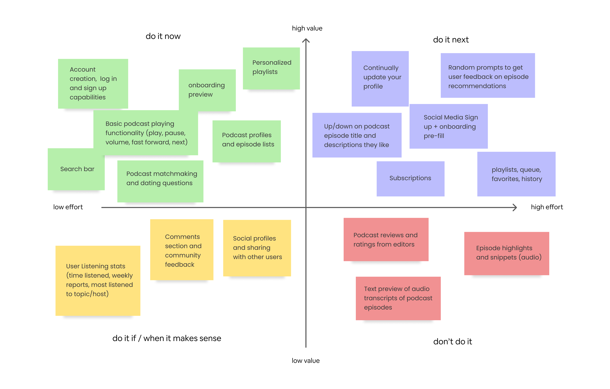
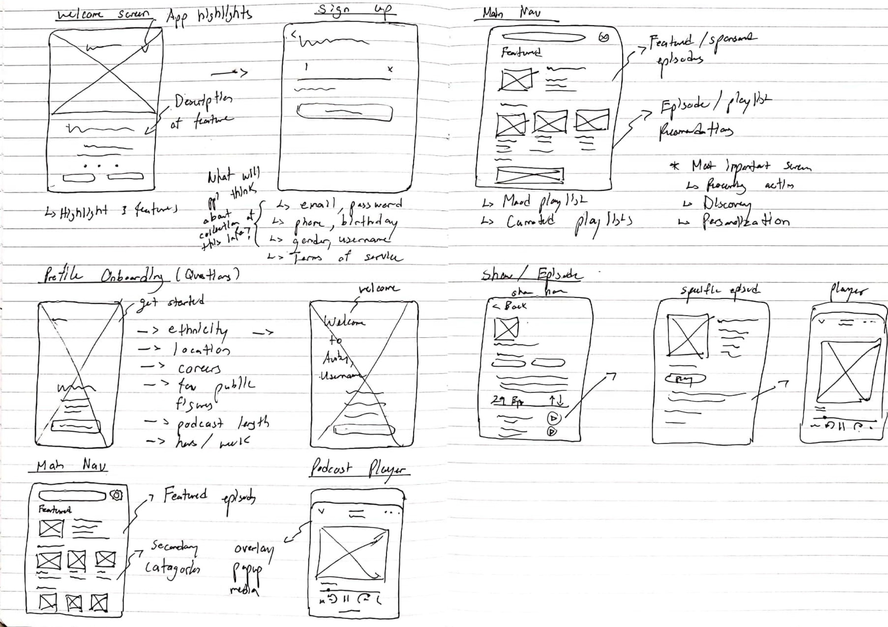
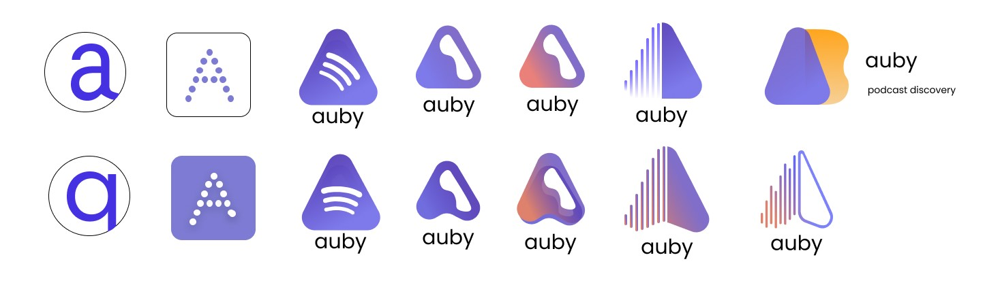
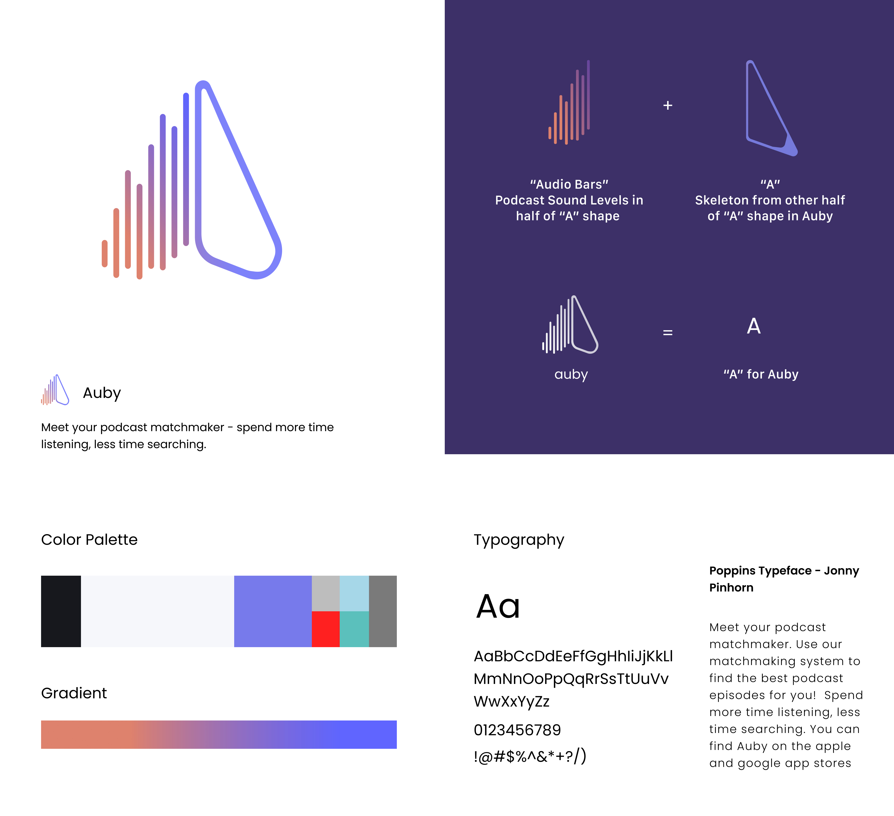
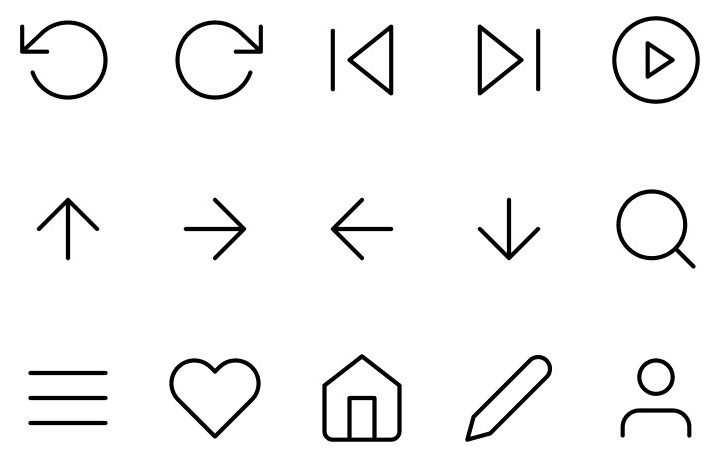

Problem Definition
For many new podcast listeners, they have difficulties finding the
right podcast episodes to listen to. Apps such as Apple podcast and
Spotify overwhelm new listeners with hundreds of generic categories
making it increasingly difficult to make a decision
Users end up feeling frustrated and impatient, constantly searching
for new content. This results in the same default popular shows to be
circulated while smaller channels receive less exposure.

Popular podcast app discover sections, it does the job but it’s just too generic
Design Challenges
Design Transparency
Data is key. In today’s day and age users are skeptical of the information
collected so we need to be transparent of our intentions.
The more information the better the results but the question is,
what type of information do we really need?
A Seamless Onboarding
We need to establish a balance between collecting enough
information to make initial recommendations and ensuring
a frictionless onboarding process.
Enable Novice and Experienced Users
How can we balance the UX design of Auby to accommodate both
new users to podcasts and experienced power users to use
our platform?
Product Goals
Dynamic Recommendations
The product vision is for Auby to become a dynamic and
evolving system. We need to figure out a way for users
to control their preferences and adapt to a user’s ever
changing listening habits.
Minimize User Drop-off
Something worse than a poorly designed app is a frustrating
onboarding process. A seamless onboarding is key to convert
new users and minimize drop-off.
Recurring Actions
How can we keep the user coming back to using Auby
through daily actions? Gamification? In-app rewards?
Free money?
From a User’s Perspective
User Insight
Due to COVID-19 conducting in person interviews was not an option.
Luckily we had access to a service called Feedback Loop, an agile
research platform for rapid consumer feedback.
The purpose of the user survey was to get better insights on
where podcasts might fit in and what discouraged users from
listening for non-podcast users. We also wanted to get a better
understanding of the background and the mindset experienced
podcast users went through when first discovering their love for podcasts.
We analyzed 408 user survey responses targeted at college educated individuals
aged between 18-54 for a period of 1 week. Below are the highlights
from an affinity diagramming session done on Miro.

Affinity diagramming highlights from Miro
Developing Research Backed Personas
Based on the small sample size research collected above, I developed two
generalized proto-personas to better empathize with who exactly
I was designing for.

Two fictional research backed proto-personas
Feature Roadmap
Focusing on what’s Important
Weeks of user research, competitive analysis and preliminary
user podcast experience allowed the team to hone in on key features
to prioritize. Building out a 2x2 feature matrix allowed PM,
Engineering and design to compromise on a scalable product roadmap
for the future.

2x2 feature prioritization matrix
Iteration Work
Initial Ideation and Flow
After some research into other personalized experience apps
I began sketching my ideas and variations of the user flow

Rough notebook sketches of my first iteration wireframes
Proposed User Flow
After numerous rounds of internal feedback from engineering and PM,
I arrived at the 4th iteration site map seen below.
To the team, logically this flow made sense but since we haven’t
done any user testing, we don’t actually know if this is the best
answer to resolve our product or design goals.

4th Iteration wireframes of user flow
Design Adjustments
Identifying User Flow Failures
We conducted 8 remote user testing sessions with interview
questions and figma prototypes that participants used with their phone.
As it turns out the user flow was a flop.
Initial assumptions we made on user interaction were completely wrong,
forcing us to rethink and reconsider our design with what we learned.
A Frustrating Onboarding
One issue users had was understanding what exactly the
onboarding process was. Users typically got stuck on the
recommendation preview screen and didn’t know how to continue.
To combat this we removed the recommendation preview screen
and added checkpoint screens which gave context as to what
were the next steps in the onboarding process.
Removing Unnecessary Questions
Another issue was that users were struggling with
how to answer profile questions about them.
Formatting was unclear and some questions were just
unnecessary to achieving our recommendation strategy.
As a result we ended up simplifying our flow to one question
per page and introducing button selectors to avoid input confusion.
A Familiar but Unfamiliar homepage
In comparison to other established podcast apps,
ours was lacking standard features. From subscriptions
to custom playlists, users had no motivation to come
back except for the recommendations.
Conforming to the norm we introduced the ability to
follow podcasts as well as categorizing recommendations
based on user preferences. For now, this was acceptable
while other standard features were on the backlog.
Developing Auby's Brand Identity
Mix Logo Reactions
Logo’s change overtime for many companies but the main attribute
I wanted to remain constant was for the logo to have a meaning behind it.
Upon conducting many iterations on the logo I received mixed reactions
on every iteration, there was no clear direction except my design intuition.

Fun fact: Auby = Audio + Buddy
Color and Typography
Introducing a periwinkle color, California sunset gradient and
Poppins sans-serif typeface was done to instill Auby as a
friendly audio buddy you could trust.

Brand is not just on how it looks but user perception
Feather Icons
I specifically chose Feather icons not only for their minimalistic
modern look but also for their open source capabilities that could
be easily implemented for the engineers.

Minimalist, simple and straight to the point icons
Design Solutions
Feature Highlight
Below is the final iteration feature highlight of wireframes and prototypes I was able to
create using Protopie. Although a design can never be perfect, I am
pleased to see how far the design has come from day one.
Efficient Onboarding
Throughout onboarding, users are able answer questions that will
directly influence their recommendation results
Lightning Fast Recommendations
A familiar interface that gets users off the ground and running
with personalized podcast recommendations on sign in
A Dynamic Experience
Users have the power to control what preference information the
algorithm receives and make changes to their preferences
The Big Picture Experience
A seamless transition from mobile to desktop, making it easy
to access your podcasts on whatever device you choose
The Result
The benefits of an Iterative Process
Taking a look back at our design and product goals,
below is a summary of improvements we’ve made moving us
closer to the ideal experience
Retro & Reflection
User testing early and often
I’m so glad that as a team we were able to agree on spending
the time and effort to conduct user testing. There have been
times where user testing was not possible and results were sub-par.
User testing helped the team clarify some initial assumptions we had
about users and make major changes in the design early on with the
onboarding and home features. Although this essentially wasted some
engineering time, it’s better we explored this route early on than
realizing this mistake later on down the road.
Data isn’t everything in a product
Early on in the product conceptualization, collecting
as much data on the user was crucial to improving the
accuracy of the recommendation algorithm. What we realized
was there was a trade off between what we were asking and
user responses.
Some questions frustrated the user while others found it odd
that a podcast app wanted to know their political stance.
Good thing we conducted multiple rounds of user testing on the
profile questions to eliminate unnecessary questions
The importance of engineering and design
Common features such as social media log in, color gradients
with dark mode and UI concepts were nice to have but not a priority.
Having some software development knowledge played a key part in
negotiating and understanding the technologies used to develop the
app itself. Listening to a developer about programming and explaining why
some components needed to be this way for UX reasons made me realize
why every designer should learn how to code.
That’s a Wrap
Fortunately a majority of the team is still working on the
app, preparing for the next iteration of features.
As for me, this is my first experience at a start-up and i now understand
what people mean by “you’ll be wearing many different hats”.
Overall i really enjoyed getting to know my team and going
from concept to a real working app in such a short amount of time.
Although sometimes stressful, I learned a lot not only about startups
but also about taking design leadership.